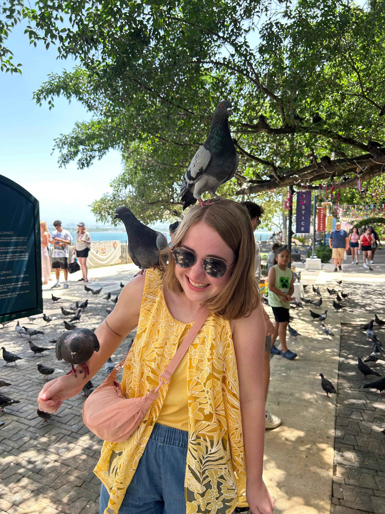
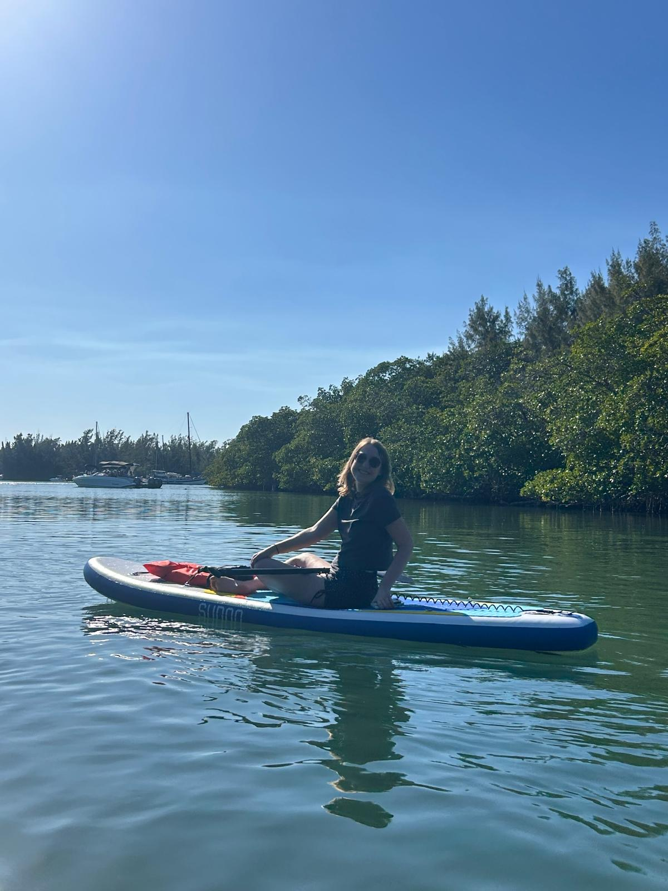

CO₂ radiative forcing
Nonlinear interactions between forcings and how they shape energy transport in the climate system.
See project →PhD Student · NSF GRFP Fellow
I study how the atmosphere absorbs and redistributes energy — using radiative transfer models, satellite observations, and large model ensembles to reduce uncertainty in climate projections.
University of Miami Rosenstiel School — Advisor: Dr. Brian Soden


Nonlinear interactions between forcings and how they shape energy transport in the climate system.
See project →Using historical model performance to narrow uncertainty in future regional precipitation projections.
Published in Earth's Future →Seasonal-to-interannual Antarctic sea ice predictability in CMIP6 models at NOAA GFDL.
See project →